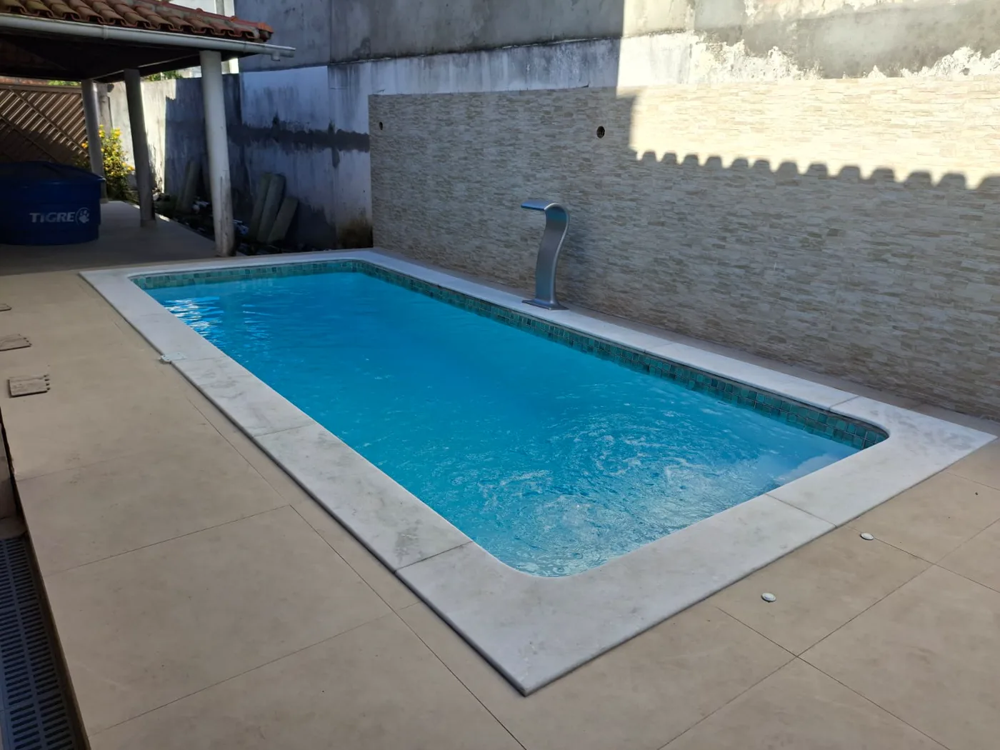
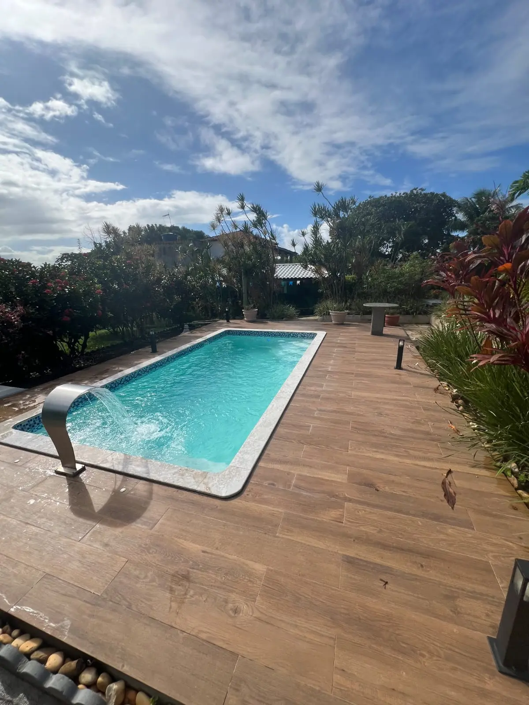
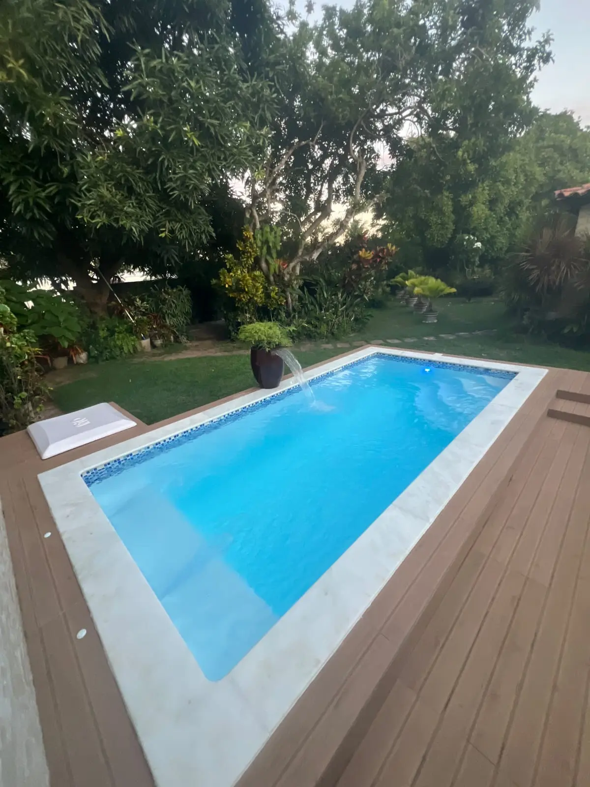
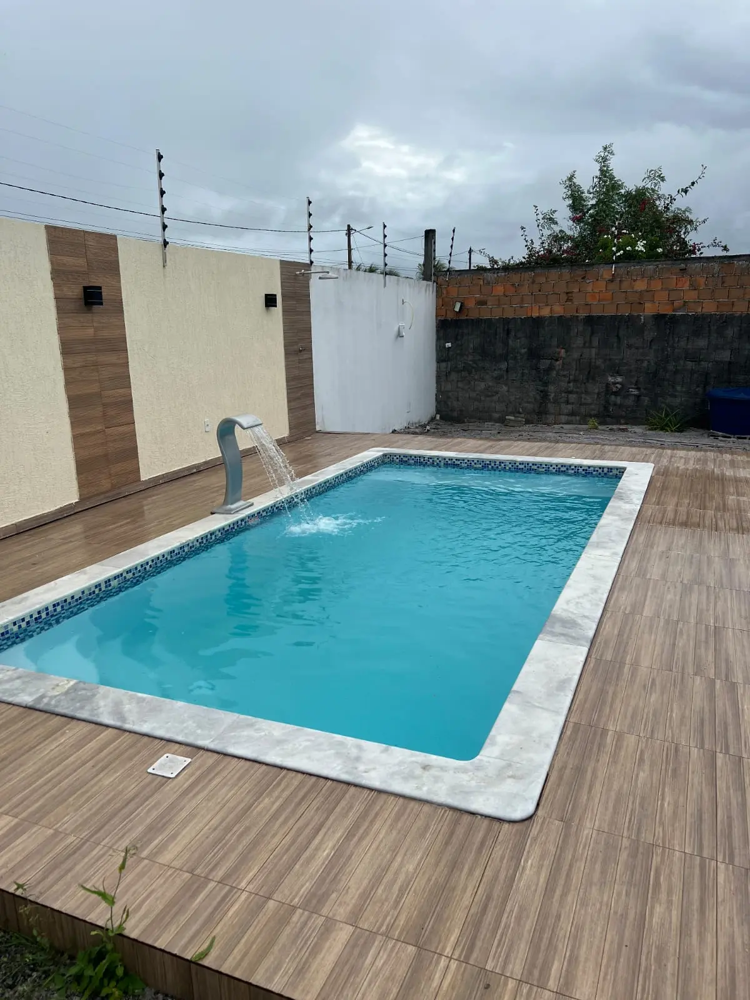
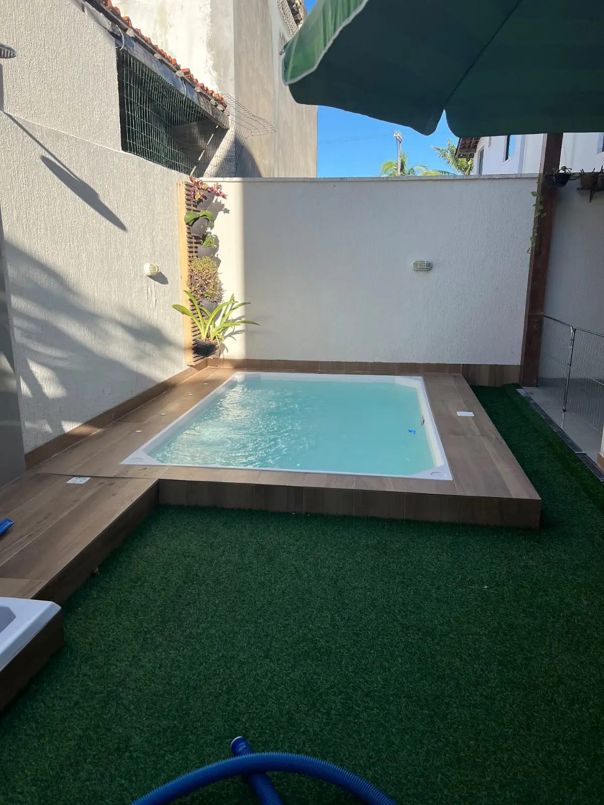

Como escolher o tamanho da piscina de fibra?
Veja o que medir no quintal e como comparar as dimensões dos modelos antes de pedir orçamento.
Blog da Linha Verde
Guias, custos, comparativos e ideias para quem quer transformar a casa em um espaço de descanso, lazer e valorização.
Categorias
Artigo em destaque

Entenda os principais fatores que influenciam no investimento para instalar uma piscina em Salvador e região.
Últimos artigos
6 conteúdos encontrados

Veja o que medir no quintal e como comparar as dimensões dos modelos antes de pedir orçamento.
Entenda os principais fatores que influenciam no investimento para instalar uma piscina em Salvador e região.

Compare prazo, manutenção, custo e durabilidade antes de escolher o tipo ideal para sua área de lazer.

Veja como uma área de lazer planejada pode aumentar o valor percebido da casa e melhorar a rotina da família.

Entenda como o gerador de cloro auxilia no tratamento da água e pode facilitar a manutenção da piscina.

Compare uso, espaço, conforto e experiência para decidir entre spa, piscina ou uma área de lazer completa.
Nenhum artigo encontrado para essa busca.
Guias completos
Conteúdos em linguagem clara para comparar alternativas, antecipar decisões e chegar ao orçamento com perguntas melhores.
Atendimento regional
Compare modelos, condições de acesso e informações para começar um orçamento com a Linha Verde.
Para planejar a compra, leia também: quanto custa instalar uma piscina em Salvador e como escolher o tamanho da piscina de fibra.
Próximo passo
Envie uma mensagem para receber orientação sobre modelos, espaço disponível e possibilidades para sua área de lazer.